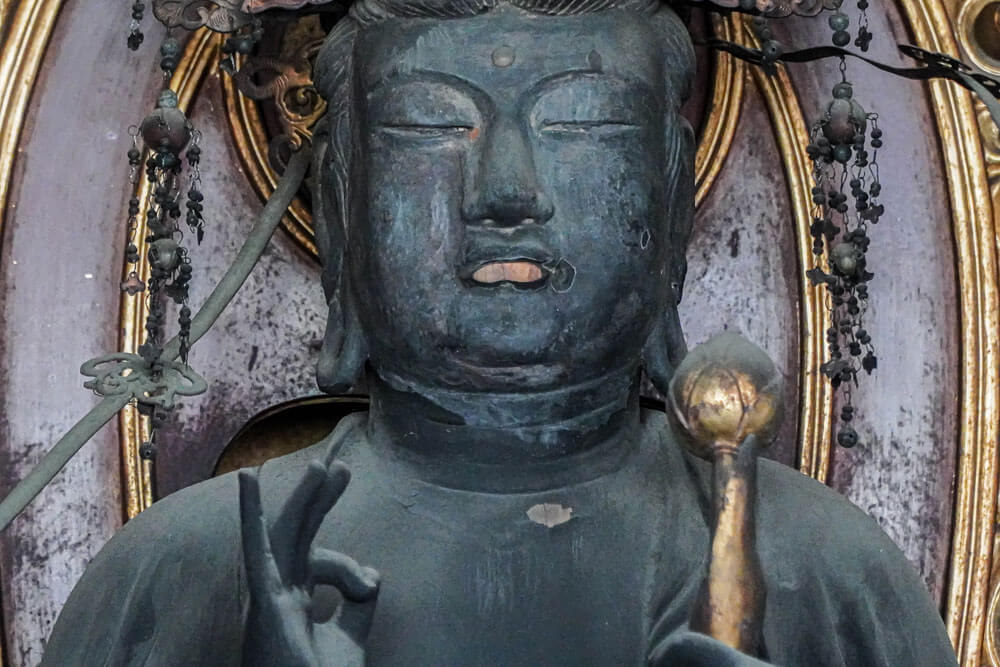

羅々寺 の歴史
当寺は山号を一切経山とする浄土宗の寺院。
奈良時代、天平年間に行基が螺良山の一切経谷に創建した阿弥陀堂に起源をもち「羅の堂」とも称しました。
伝えでは、行基は丈六の阿弥陀如来像を彫ったとされています。
応仁の乱で、羅々地域一帯は戦場となり、当寺は荒廃しました。
その後螺良院門跡の許可を得て、現在の地に堂を移し寺を再興しました。
正徳三年（1713）には本尊が修復され、享保十五年（1730）には本堂が建立され、現在に至ります。